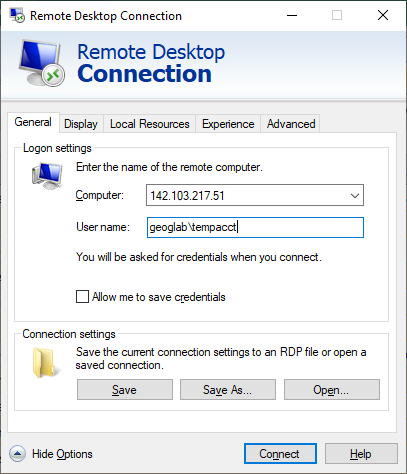

ArcGIS Pro Access
You will be using the ArcGIS Pro software package to complete your lab assignments. This is a proprietary program (it costs money) that can only be run on the Windows operating system. There are two options for accessing the software.
Option 1: Purchase a Student License
You may purchase a student version of the software to install on your own computer for $20. ArcGIS Pro only runs on the Windows OS.
Check that your computer meets the system requirements for ArcPro using this link.
Go here to purchase, ArcGIS Pro. Fill out the info, make your payment, and you should be given and ArcOnline Account and a link to download ArcGIS Pro.
- If you run into any issues, contact Jose Aparicio at: labhelp@geog.ubc.ca
Option 2: Geography Lab Computers
The Geography Department has two computer labs (rooms 115 and 237). They may be accessed in-person when the geography building is open or they can be accessed via remote desktop connection 24 hours a day, 7 days a week. All students will be given a UBC Geography logon, you should receive logon credentials by email before the first day of lab.
Lab fee
There is a lab fee to use geography computers. You must pay the lab fee or you will loose access to your account. The lab fee is due by Friday June 2nd
- If you have not received logon credentials, contact Jose Aparicio at: labhelp@geog.ubc.ca
Remote Access
To remotely access lab computers, follow these instructions. Information about the Geography Computer Labs can be found here.
Note the lab schedule and refrain from remotely accessing a computer while other courses are holding lab session in that room. When accessing computers remotely - try to use computers that are located in room 239 as those are less likely to result in conflicts with in-person users.
If you are having trouble logging on remotely try: adding “geoglab" in front of your username.
